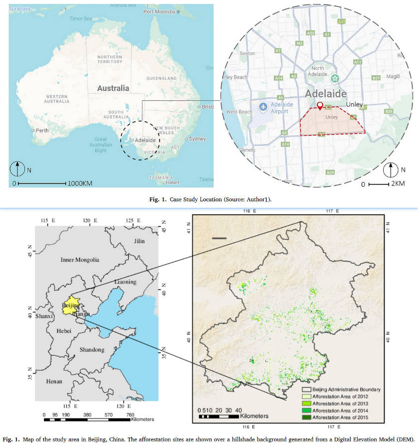
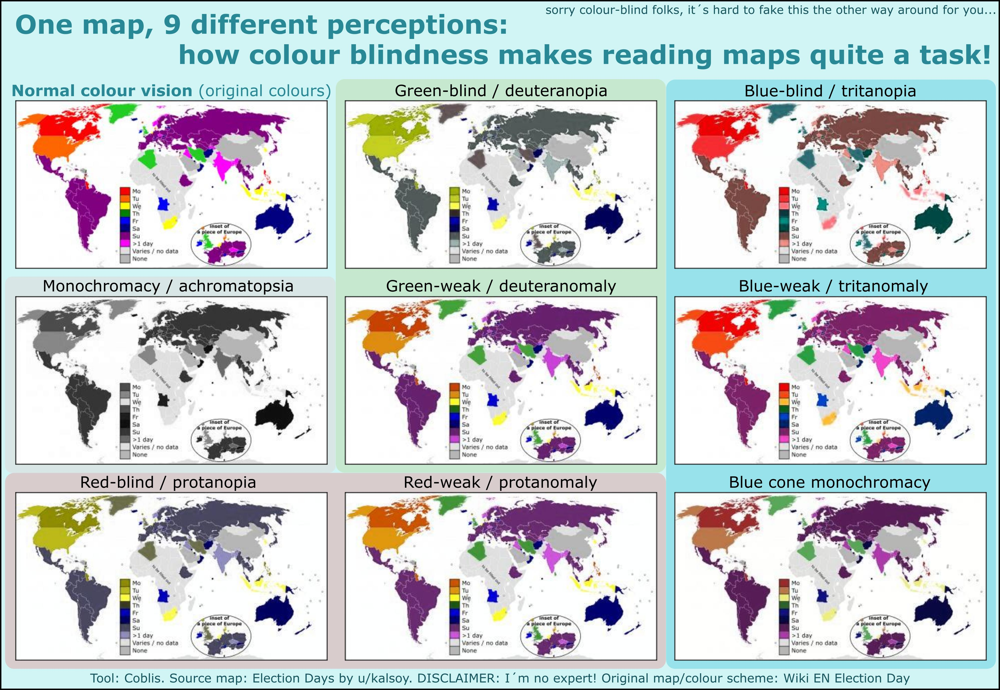
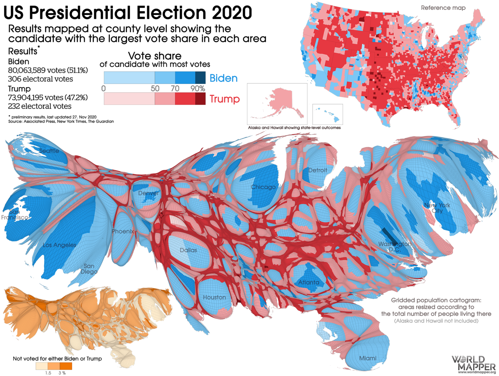
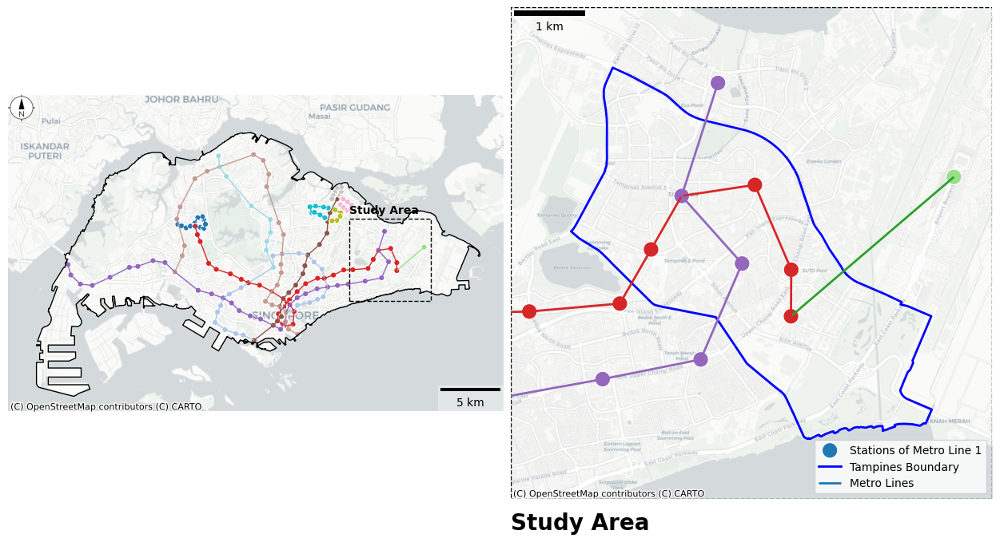

class: center <br> # Spatial Analysis of Urban Data ## Lecture and Tutorial: Cartographic Design [Bayi Li](mailto:barryli081@gmail.com) .toc-wrapper[ <div class="toc"> <a href="#why-map-design" class="toc-item">1. Why Cartographic Design Matters</a> <a href="#design-principles" class="toc-item">2. Design Principles</a> <a href="#thematic-maps" class="toc-item">3. Choosing a Thematic Map Type</a> <a href="#choropleth" class="toc-item">4. Designing a Choropleth Map</a> <a href="#workflow" class="toc-item">5. Workflow and Practice</a> <a href="#critique" class="toc-item">6. Critique and Assignment</a> </div> ] --- name: why-map-design ## Week 5 Focus This lecture introduces cartographic design as the link between spatial analysis and communication. 1. **Why design matters**: maps answer questions and tell stories, for better or worse 2. **Design principles**: map elements, visual hierarchy, visual variables, colour, labels, scale 3. **Choosing a thematic map type**: matching the data and the message to a map type 4. **Designing a choropleth map**: classification, good practice, QGIS + Python 5. **Workflow and practice**: a step-by-step workflow, then three hands-on maps 6. **Critique and assignment**: checking your own map and applying it in Assignment Part I --- ## Learning Objectives By the end of this session, students should be able to: 1. explain the main principles of effective cartographic design 2. choose suitable visual variables and colour schemes for qualitative and quantitative data 3. distinguish between common thematic map types and match them to the data 4. design a choropleth map with defensible classification and colour choices 5. produce a clean map layout in QGIS (with Python for data preparation) for an urban analysis task 6. evaluate a map critically for clarity, bias, and visual hierarchy --- ## What Does Cartographic Design Do? A map is not only a spatial dataset placed on a canvas. A designed map should do three things well: - communicate the main message quickly - preserve enough context for interpretation - avoid misleading the reader through poor visual choices Cartographic design is therefore a form of analytical communication. --- ## A Map Always Answers a Question Before styling a map, define the question first. Examples: - Where are the strongest clusters of activity? - Which districts have the highest population density? - How accessible are transport stops from residential blocks? - How does land use differ across the city? The map design should support the question, not compete with it. --- name: storytelling ## Maps: A Powerful Tool of Storytelling A map is rarely neutral. Every map makes an argument about what matters, where to look, and what to conclude. - Maps read as objective, so a spatial claim carries authority that plain text does not - They compress relationships — proximity, clustering, flow, inequality — into a single glance - Framing choices such as centring, colour, and what is left off guide the reader like a narrator Cartographic design is the craft of telling that story clearly, and honestly. ??? Think of John Snow's cholera map, or a choropleth of access to hawker centres. Each one does not just show data — it makes a point. The power to persuade is exactly what we are designing for. --- ## What Makes a Map Tell a Story A map moves from a picture to a narrative when the design does deliberate work. - a clear **message**: one main idea the reader should leave with - **focus**: visual hierarchy that leads the eye to that message first - **context**: just enough basemap and reference to make the pattern legible - **sequence**: for a map series or interactive map, an order that builds an argument - **framing**: an honest title and legend that name what is, and is not, being shown The story should emerge from the data, not be imposed on it. --- ## Storytelling and Responsibility: How Maps Can Mislead The same choices that make a map compelling are the choices that can mislead, even when the data is correct. - classification breaks can flip a choropleth's whole story - colour emphasis can exaggerate or hide a pattern - symbol scaling can inflate or shrink differences - unequal area sizes let large, sparsely populated areas dominate a choropleth - selective framing, or too much or too little context, can leave out inconvenient areas or values - visual precision can imply certainty the data does not support A persuasive map demands critical reading: of the design as well as the data. Storytelling power and cartographic responsibility are the same fact. .references[ - Monmonier, M. (2018). *How to Lie with Maps*, 3rd ed. University of Chicago Press. - Roth, R. E. (2021). Cartographic design as visual storytelling. *The Cartographic Journal.* ] --- name: design-principles ## Elements of a Map A complete map typically combines: - title - map body - legend - labels - scale indicator - north arrow when appropriate - data source and author note - layout balance and whitespace Not every map needs every element, but every element included should earn its place. --- .right_half[ <figure> <p></p> <figcaption>Example of a polished static thematic map with clear layout and hierarchy.</figcaption> <figsubcaption>Sources: (top) <a href="https://doi.org/10.1016/j.landurbplan.2026.105783" target="_blank">Chen et al. (2027)</a>, <i>Landscape and Urban Planning</i> 278, 105783, Fig. 1; (bottom) <a href="https://doi.org/10.1016/j.landurbplan.2026.105786" target="_blank">Feng et al. (2027)</a>, <i>Landscape and Urban Planning</i> 278, 105786, Fig. 1.</figsubcaption> </figure> ] ## Two examples from Journal **Map 1: Unley, Adelaide** - ✅ Clear overview-to-detail logic; study area stands out - ❌ Borrowed web-map tiles, not credited - ❌ Extent circle ≠ zoomed area; round frames clip labels - ❌ Basemap clutter competes with the study area; no legend - ❌ Scale bar invalid at continental scale (Web Mercator) -- **Map 2: Beijing afforestation** - ✅ Proper GIS layout: legend, graticule, scale bar, locator --- ## Visual Hierarchy Visual hierarchy controls what the reader sees first, second, and last. To build hierarchy: - make the thematic layer the strongest visual element - reduce the contrast of the basemap - de-emphasise supporting layers - use size, colour, and weight deliberately - avoid giving every feature equal visual importance --- ## Basemaps and Context Basemaps should support the message, not dominate it. - use light neutral basemaps for thematic overlays - reduce labels if they conflict with your own annotations - choose satellite basemaps only when image detail is analytically necessary - remember that default basemaps often reflect someone else's design priorities --- name: visual-variables ## Visual Variables Cartographic design relies on a small set of visual variables: - position - size - shape - hue - value - texture - orientation These variables let us encode difference, order, magnitude, and category. --- .left_half[ ### Qualitative data Best represented by: - distinct hues - different shapes - clear category labels Use when the goal is to separate classes, such as land use type or transit mode. ] .right_half[ ### Quantitative data Best represented by: - ordered colour value - graduated symbol size - density or intensity Use when the goal is to compare magnitude, such as population or count. ] --- .right_half[ <figure> <p></p> <figcaption>One map, nine perceptions: the same categorical colour scheme seen with normal vision and eight types of colour vision deficiency.</figcaption> <figsubcaption>Source: <a href="https://imgur.com/through-eyes-of-colour-blind-simulating-how-world-map-is-coloured-CMCywUU" target="_blank">"Through the eyes of the colour-blind: simulating how a world map is coloured"</a>, Imgur (simulated with Coblis; original map: Election Days by u/kalsoy).</figsubcaption> </figure> ] ## Colour Design Colour should help interpretation rather than decorate the page. - use **sequential** schemes for ordered low-to-high values - use **diverging** schemes when the data has a meaningful midpoint - use **qualitative** schemes for categories without numeric order - keep saturation under control to avoid visual noise - check whether the scheme remains legible on a projector and in print **Tool**: [ColorBrewer 2.0](https://colorbrewer2.org/) by Cynthia Brewer helps you pick a colour ramp. Choose the data type (sequential, diverging, qualitative) and the number of classes, then filter for colour-blind safe, print friendly, or photocopy safe schemes. The same ramps are built into QGIS (*Color ramp → ColorBrewer*) and Python (e.g. `cmap="YlOrRd"` in matplotlib/geopandas). .references[ - Brewer, C. A., Harrower, M., & The Pennsylvania State University. *ColorBrewer 2.0: Color advice for cartography*. [https://colorbrewer2.org/](https://colorbrewer2.org/) ] --- ## Labels and Typography Labels are part of the map, not an afterthought. - label only what supports the task - use font size to indicate importance - avoid dense overlap - keep naming conventions consistent - use halos or light masks where backgrounds are busy Typography should clarify geography, not create clutter. --- ## Scale and Generalisation A map at city scale cannot display the same detail as a map at neighbourhood scale. Generalisation may include: - simplifying geometry - aggregating features - reducing label density - merging categories - hiding minor features If everything remains visible at every scale, the map usually becomes unreadable. --- name: thematic-maps ## What Is a Thematic Map? A thematic map focuses on **one theme, topic, or dataset** across a geographic area, rather than on physical or political features. > Thematic maps "focus on visualizing a specific theme, topic, or dataset across a geographic area." (Geoapify, 2025) Geoapify (2025) groups the common types into eight: .left_half[ - Choropleth - Bivariate - Isoline - Isopleth ] .right_half[ - Heat map - Dot density - Graduated (proportional) symbol - Cartogram ] <div class="clear"></div> The right choice depends on the **data** (points or areas, counts or rates, discrete or continuous) and on the **message**. Map type is a methodological choice, not just a design choice. <div class="source-note">Source: adapted from Geoapify (2025), <a href="https://www.geoapify.com/thematic-maps-types-examples/" target="_blank"><i>Thematic Maps Guide: Definition, Different Types, Use Cases and Examples</i></a>.</div> .references[ - Geoapify. (2025, June 3). *Thematic maps guide: Definition, different types, use cases and examples*. Geoapify Blog. [https://www.geoapify.com/thematic-maps-types-examples/](https://www.geoapify.com/thematic-maps-types-examples/) ] --- ## Eight Thematic Map Types (1/2) .maptype-table[ | Type | What it shows | Data needed | Strength | Watch out | |---|---|---|---|---| | **Choropleth** | Areas shaded by value | Aggregated values per region (rates, ratios) | Simple; easy regional comparison | Large areas dominate; class breaks shape the story; not for raw counts | | **Bivariate** | Two variables at once, by combining two colour scales | Two variables for the same areas | Reveals where two variables coincide | Hard for general readers; needs a clear 2-D legend; colour-blind accessibility | | **Isoline** | **Lines** joining points of equal value (contours, isotherms, isochrones) | Dense, accurate point measurements | Shows gradual change and gradients | Sparse data gives rough lines; cluttered where values change fast | | **Isopleth** | **Shaded bands** between isolines | Interpolated or aggregated values over a surface | Shows smooth regional patterns | Smooths away local extremes; depends on interpolation | ] Examples from the source: income vs education (bivariate), travel-time zones (isoline), population density gradients (isopleth). <div class="source-note">Source: adapted from Geoapify (2025), <a href="https://www.geoapify.com/thematic-maps-types-examples/" target="_blank"><i>Thematic Maps Guide: Definition, Different Types, Use Cases and Examples</i></a>.</div> --- ## Eight Thematic Map Types (2/2) .maptype-table[ | Type | What it shows | Data needed | Strength | Watch out | |---|---|---|---|---| | **Heat map** | Density or intensity as a colour surface, without boundaries | Point events (GPS, sensors, logs) | Intuitive view of hotspots | Depends on radius and scaling; can exaggerate or over-smooth; not for exact comparison | | **Dot density** | Dots, each standing for a fixed count (e.g. 1 dot = 1,000 people) | Counts per area | Shows absolute numbers and distribution | Dots placed randomly within an area, not at true locations; overlap hides detail | | **Graduated symbol** | Symbols sized by value at locations | Quantities at points or area centroids | Compares absolute values between places | Overlap in dense areas; needs a clear size legend; unsuitable for rates | | **Cartogram** | Areas resized by a variable instead of land area | A quantity per region | Makes disparities memorable | Distorts geography; unfamiliar to many readers | ] Note the pairing: **rates → choropleth**, **counts → dot density or graduated symbol**. <div class="source-note">Source: adapted from Geoapify (2025), <a href="https://www.geoapify.com/thematic-maps-types-examples/" target="_blank"><i>Thematic Maps Guide: Definition, Different Types, Use Cases and Examples</i></a>.</div> --- ## Isoline vs Isopleth, and Kinds of Cartogram .left_half[ ### Isoline vs isopleth > "Isolines show the lines, while isopleths show the regions between them." (Geoapify, 2025) - **Isoline**: elevation contours, isobars, noise contours, isochrones from a station - **Isopleth**: the same surface, filled in colour bands Practice 2 builds both: IDW interpolation (isopleth surface), then contours (isolines). ] .right_half[ ### Three kinds of cartogram - **Contiguous**: areas keep their shared borders, but shapes stretch - **Non-contiguous**: areas keep their shape and grow or shrink apart from each other - **Dorling**: each area becomes a circle sized by the value, placed near its real position Practice 3 uses a contiguous cartogram. ] <div class="clear"></div> <div class="source-note">Source: adapted from Geoapify (2025), <a href="https://www.geoapify.com/thematic-maps-types-examples/" target="_blank"><i>Thematic Maps Guide: Definition, Different Types, Use Cases and Examples</i></a>.</div> --- ## Cartograms: From Land Area to Data Cartograms intentionally distort geography to emphasise data relationships. - useful when area size visually dominates interpretation - useful for media communication and comparison - less suitable when exact geography is essential <div align="center"> <figure> <p></p> <figcaption>Cartograms shift attention from physical land area to thematic comparison.</figcaption> </figure> </div> --- ## Matching Your Data to a Map Type .maptype-table[ | Your data | Suggested map type | Urban example | |---|---|---| | A rate or ratio per region | Choropleth | % residents aged 65+ per planning area | | Two related variables per region | Bivariate choropleth | income vs education per subzone | | Point measurements of a continuous phenomenon | Isoline or isopleth | air temperature from weather stations | | Many point events, where broad pattern matters more than exact values | Heat map | taxi pick-ups, reported incidents | | Counts per region, where distribution within the region matters | Dot density | residents per subzone (1 dot = 500 people) | | Totals tied to discrete places rather than areas | Graduated symbol | passengers per MRT station, jobs per employment centre | | Totals per region, where land area distorts the message | Cartogram | population per planning area | ] **Tools** mentioned in the source: QGIS, Kepler.gl, Leaflet and MapLibre for building maps yourself; Datawrapper, Flourish, ArcGIS Online, and CARTO for no-code maps. <div class="source-note">Source: adapted from Geoapify (2025), <a href="https://www.geoapify.com/thematic-maps-types-examples/" target="_blank"><i>Thematic Maps Guide: Definition, Different Types, Use Cases and Examples</i></a>.</div> --- name: choropleth .right_half[ <figure> <p></p> <figcaption>Example of a polished static thematic map with clear layout and hierarchy.</figcaption> </figure> ] ## Choropleth Maps Choropleth maps are widely used because they summarise area-based data clearly. Use them when: - values are standardised, such as percentage or density - the reporting unit matters, such as planning zones or districts - the main goal is comparison across areas Do not use choropleths for raw counts unless the area sizes are already comparable. --- ## Classification Choices Matter For choropleth maps, class breaks strongly affect interpretation. Common approaches: - equal interval - quantile - natural breaks - standard deviation Different classification methods can produce different visual stories from the same dataset. --- ## Good Practice for Choropleth Maps in QGIS When building a choropleth map in QGIS, follow these rules first: 1. map a **rate, ratio, percentage, or density**, not a raw count 2. choose a **single clear attribute field** and check for null or extreme values 3. use a **sequential colour ramp** for ordered values, or a **diverging ramp** only when there is a meaningful midpoint 4. start with **4 to 6 classes** so the legend remains readable 5. compare class break methods in QGIS before deciding which one best matches the story in the data 6. use thin, quiet polygon outlines so boundaries do not overpower the pattern 7. keep the basemap light or remove it entirely if it competes with the thematic layer --- ## Good Practice for Choropleth Maps in QGIS In QGIS, the usual workflow is: - open **Layer Properties -> Symbology** - choose **Graduated** - select the target field - choose a colour ramp - test **Quantile**, **Natural Breaks (Jenks)**, and **Equal Interval** - inspect the map and legend together before exporting The goal is not only a beautiful map, but one that is statistically defensible and easy to interpret. --- name: workflow ## Recommended Design Workflow 1. define the question and audience 2. choose the right map type 3. decide the geographic extent and scale 4. simplify the layer stack 5. style the thematic layer first 6. add labels and supporting context 7. review the legend and layout 8. test whether the message is immediately visible --- ## Practical Workflow: Python + QGIS Use **Python for data preparation** (consistent, reproducible logic) and **QGIS for design and layout** (fast visual comparison). .left_half[ ### In Python 1. clean the attribute table: check for nulls, outliers, and inconsistent units 2. calculate the mapping variable (rate, percentage, or density) 3. join it to the spatial identifiers 4. export a GeoPackage with the new field ] .right_half[ ### In QGIS 5. load the layer and inspect fields and data types 6. choose a symbology method suited to the variable (e.g. **Graduated**) 7. test class breaks and colour ramps 8. in layout view, add title, legend, scale bar, and source note 9. export as image or PDF ] <div class="clear"></div> Python handles the logic; QGIS handles the communication. Both keep design decisions tied to analytical intent. --- name: practice ## Hands-on Practice: Three Thematic Maps Each practice builds one of these map types with Singapore open data. <div style="display: flex; gap: 28px; font-size: 0.8em; line-height: 1.4;"> <div style="flex: 1;"> <svg viewBox="0 0 160 110" width="100%" style="max-height: 150px;"> <polygon points="10,10 60,8 55,50 12,55" fill="#fee5d9" stroke="#555"/> <polygon points="60,8 110,12 105,45 55,50" fill="#fb6a4a" stroke="#555"/> <polygon points="110,12 150,10 148,60 105,45" fill="#fcae91" stroke="#555"/> <polygon points="12,55 55,50 60,100 10,98" fill="#fcae91" stroke="#555"/> <polygon points="55,50 105,45 100,100 60,100" fill="#cb181d" stroke="#555"/> <polygon points="105,45 148,60 150,100 100,100" fill="#fb6a4a" stroke="#555"/> </svg> <p><b>Choropleth map</b></p> <p><b>Shows</b>: a value for each predefined area, shaded by class</p> <p><b>Data</b>: standardised rates or ratios per unit (e.g. % elderly per planning area)</p> <p><b>Watch out</b>: large areas dominate visually; raw counts mislead</p> </div> <div style="flex: 1;"> <svg viewBox="0 0 160 110" width="100%" style="max-height: 150px;"> <rect x="8" y="30" width="30" height="30" fill="#9ecae1" stroke="#555"/> <rect x="40" y="8" width="62" height="62" fill="#3182bd" stroke="#555"/> <rect x="104" y="40" width="22" height="22" fill="#9ecae1" stroke="#555"/> <rect x="20" y="64" width="40" height="40" fill="#6baed6" stroke="#555"/> <rect x="64" y="74" width="16" height="16" fill="#c6dbef" stroke="#555"/> <rect x="104" y="66" width="46" height="38" fill="#6baed6" stroke="#555"/> </svg> <p><b>Cartogram</b></p> <p><b>Shows</b>: areas resized in proportion to a variable instead of land area</p> <p><b>Data</b>: totals such as population, votes, or GDP per unit</p> <p><b>Watch out</b>: shapes are distorted, so readers need familiar geography</p> </div> </div> <div style="font-size: 0.78em;">Rule of thumb: data collected <b>by area</b> → choropleth; data that varies <b>continuously</b> → isopleth; when <b>area size</b> distorts the message → cartogram.</div> --- ## Practice 1: Choropleth Map of an Ageing Population **Question**: Which planning areas have the highest share of residents aged 65 and above? **Data** (data.gov.sg): - [Resident Population by Planning Area/Subzone of Residence, Age Group and Sex (Census of Population 2020)](https://data.gov.sg/datasets/d_d95ae740c0f8961a0b10435836660ce0/view) - [Master Plan 2019 Planning Area Boundary (No Sea)](https://data.gov.sg/datasets/d_4765db0e87b9c86336792efe8a1f7a66/view) **Steps**: 1. Keep only the planning-area rows (e.g. `Ang Mo Kio - Total`), not the subzone rows 2. Clean the name to match `PLN_AREA_N` (upper case, without ` - Total`). Watch out: one row is spelled `Changi- Total` 3. Uninhabited areas show `-` instead of 0: convert them to empty values, not zero rates 4. Calculate `pct_65plus = (Total_65_69 + ... + Total_90andOver) / Total_Total * 100`, then join to the boundary 5. Style as a graduated map with 5 classes and a sequential colour ramp **Reflect**: Outram (about 18,000 residents) tops the ranking at 25.5%, just ahead of Bukit Merah (about 151,000). Does the map make that difference in scale visible? How does the pattern change between Quantile and Natural Breaks? --- ## Practice 2: Cartogram of Where Singaporeans Live **Question**: What does Singapore look like when each planning area is sized by its population instead of its land area? **Data**: reuse the joined layer from Practice 1 (`Total_Total` = resident population) **Steps**: 1. Install the QGIS plugin **Cartogram3** (*Plugins → Manage and Install Plugins*) 2. Run it with `Total_Total` as the size field (10–15 iterations is usually enough). Give uninhabited areas a small value such as 1, otherwise the algorithm cannot size them 3. Colour the cartogram with `pct_65plus` from Practice 1, so the map shows both size and rate 4. Place the ordinary map and the cartogram side by side in a layout **Reflect**: Which planning areas grow or shrink the most? Compare with your choropleth map: which one gives a fairer impression of how many elderly residents live in each area? --- name: critique ## Map Critique Checklist When reviewing a map, ask: - What is the main message? - Is the map type appropriate for the variable? - Does the basemap help or distract? - Are colours and labels readable? - Is the legend easy to interpret? - Could the map be misleading because of scale, classification, or symbol choice? If these questions are hard to answer, the design likely needs revision. --- ## Mini Exercise Take one urban dataset from a previous week and propose a cartographic design for it. Your design should specify: - target audience - map type - variable being mapped - classification or symbol rule - basemap choice - key layout elements - one likely design risk --- ## Key Takeaways - Cartographic design turns analysis into communication. - Every design choice shapes what the reader notices and concludes. - Map type, colour, labels, and scale must match the data and the question. - Good maps are selective, readable, and honest about uncertainty. --- name: assignment ## Assignment: Spatial Data Processing (Part I) Apply this week's design principles: create **one thematic map of Singapore with QGIS or Python** that answers a question you define. Released this week; due end of Week 7. <a href="assignment_sdp1.html" target="_blank">Open the full assignment brief in a new tab ↗</a> <iframe class="map-embed" src="assignment_sdp1.html" title="Assignment: Spatial Data Processing (Part I)" style="height: 55vh;"></iframe> --- <xL>Assignment brief: </xL><button onclick="window.location.href='assignment_sdp1.html'">Go to Assignment (Part I)</button> <xL>Continue with Lecture: </xL><button onclick="window.location.href='vector.html'">Go to Spatial Analysis of Vector Data</button> <xL>Back to course menu: </xL><button onclick="window.location.href='index.html'">Go Back to Menu</button>